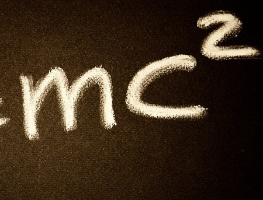
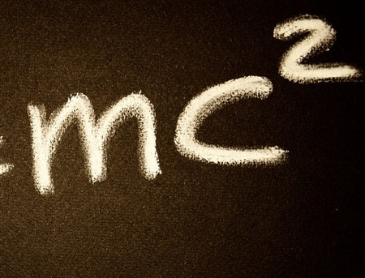

Exploring STEM Careers
Curious about the diverse career paths in STEM? In this blog post, we dive into various STEM professions, shedding light on the exciting opportunities and challenges...
Read more
—Persis Boateng Founder, Mentor
Zikora STEM Society is a non-profit organization driven by a passionate belief in the transformative power of STEM education. Founded in 2020, we are dedicated to breaking down barriers and empowering underserved communities by providing access to high-quality learning experiences in science, technology, engineering, and mathematics. Our core pillars rest on mentorship, accessibility, and innovation. With a team of 15 dedicated individuals, including educators, and volunteers, we've impacted the lives of over 1,000 students through a blend of online and in-person workshops. These workshops impart knowledge and equip students with the tools and resources necessary to explore coding, research, and various STEM disciplines. At Zikora STEM Society, we're not just educators; we're mentors, advocates, and catalysts for change. Together, we strive to create a world where STEM education knows no bounds and where every aspiring mind has the opportunity to reach their full potential.
 


Curious about the diverse career paths in STEM? In this blog post, we dive into various STEM professions, shedding light on the exciting opportunities and challenges...
Read moreDiscover how robotics is revolutionizing the education sector. From enhancing problem-solving skills to fostering creativity, robotics plays a crucial role in shaping the future of learning...
Read moreHave questions, suggestions, or want to partner with us? We'd love to hear from you! Our team at Zikora STEM Society is dedicated to fostering connections and expanding opportunities in STEM education.
Whether you're an educator, potential collaborator, or simply passionate about our mission, feel free to get in touch through the form below or reach out via email or phone.